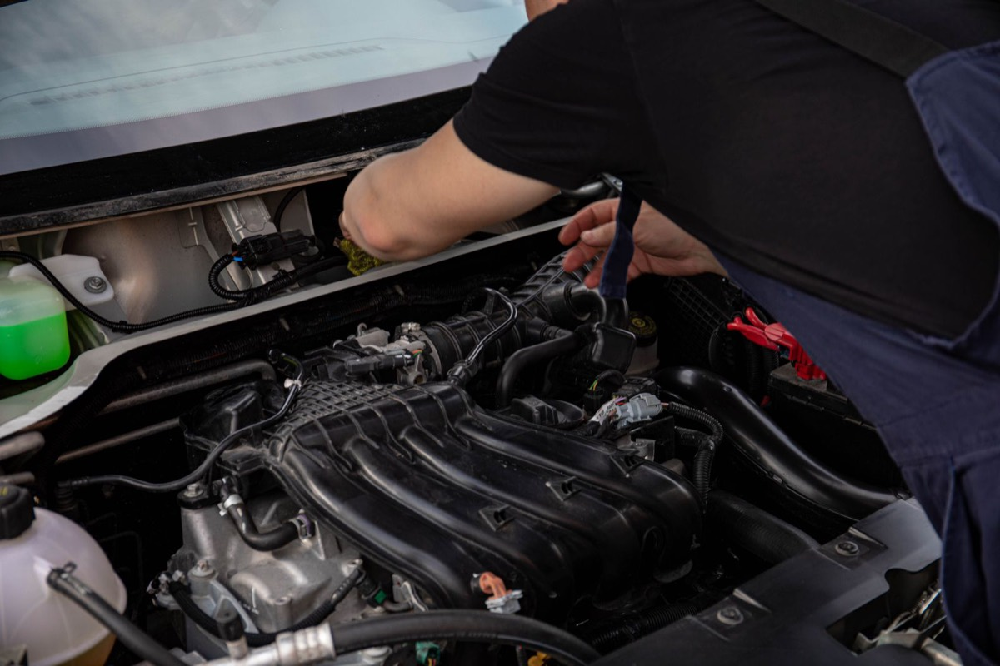
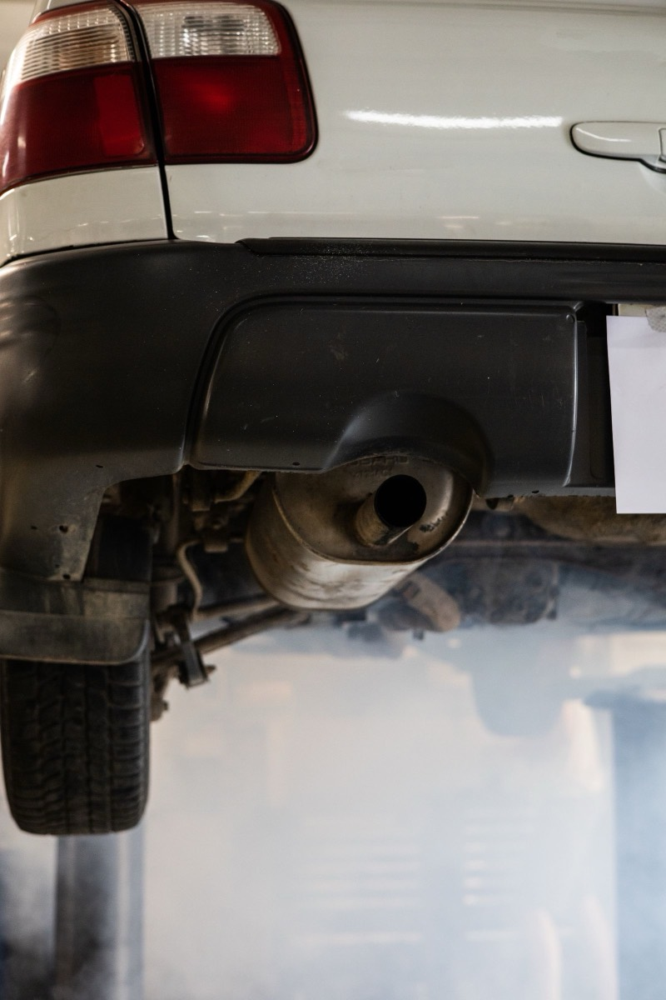
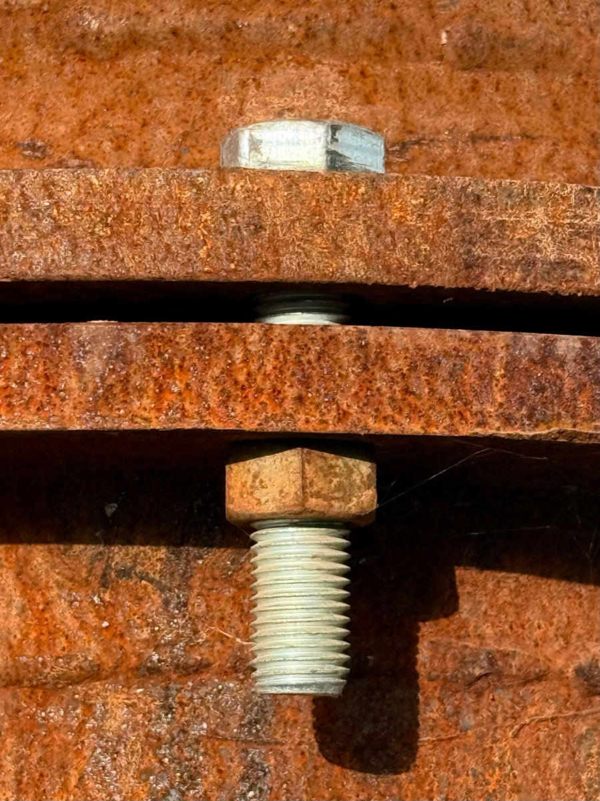

Exhaust Manifold Leak: Why It Ticks Cold and Goes Quiet Hot
An exhaust manifold leak sounds like a tick, a tap, or a soft puff that is loudest in the first thirty seconds after a cold start and fades as the engine warms. That fade is the whole diagnosis. A lifter tick gets louder with heat; an exhaust leak gets quieter, because the gap that makes the noise c
The tick that fades as the engine warms is the diagnosis. A leaking manifold gasket is a small gap that closes when the casting expands — so a noise that is loudest in the first thirty seconds and gone by the end of the driveway is a manifold leak, not a lifter. The parts to fix it start at $17.99.
The reason the bolt breaks is the reason the leak happens: the manifold grows and shrinks every heat cycle, the bolt does not, and the two outermost fasteners take the most movement. That is why the front-most and rear-most bolt positions are the ones with a repair clamp sold for them specifically.

An exhaust manifold leak sounds like a tick, a tap, or a soft puff that is loudest in the first thirty seconds after a cold start and fades as the engine warms. That fade is the whole diagnosis. A lifter tick gets louder with heat; an exhaust leak gets quieter, because the gap that makes the noise closes as the casting expands.
The leak and the broken bolt are the same story. A cast iron manifold grows and shrinks on every heat cycle. The bolts holding it do not. Over enough cycles the gasket loses its crush and the outermost fasteners — the ones that see the most movement — either back out or snap. Nearly every part below is sold to deal with one half of that pair, plus the flange downstream that fails next. Prices were read on live listings on 17 November 2026.
Why the noise comes and goes
Exhaust gas escaping a gap makes noise because it is moving at high velocity through a space too small for it. Cold, the manifold flange and the cylinder head are at their smallest, the gap is widest, and the noise is at its worst. As the engine reaches operating temperature the casting expands, the gap narrows, and the tick drops away.
That is also why the problem seems to “fix itself” and then comes back a few months later — the gap never closed, it just closed enough. Each cold start scrapes a little more gasket material out of the joint.
What you hear depends on where the leak is. A failed gasket at the head flange ticks. A crack in the casting itself is more often a hiss or a puff that follows engine speed. A leak at the downpipe flange, downstream of the manifold, shows up as a drone or a rasp rather than a tick.

The three noises that get confused
Before buying anything, separate these, because only one of them is a manifold job.
| What you hear | When it is loudest | What it usually is |
|---|---|---|
| Sharp tick, rhythmic, front of the engine bay | First 30 seconds, cold | Manifold or gasket leak |
| Tick that grows with heat and follows oil pressure | Warmed up, idle | Lifter or valvetrain |
| Soft flutter or puff under load | Steady throttle, accelerating | Cracked casting or failed flange |
| Whistle or rasp at cruise | Constant above a road speed | Exhaust joint downstream, not the manifold |
The cold-versus-hot behaviour is the fastest filter available and it costs nothing: hood open, listen at the front wheel arch before the temperature gauge moves.

How to confirm it in ten minutes
Tick aside, there are three checks that get repeated most often because they work on a driveway without a smoke machine.
The cold-soap test. Mix dish soap and water in a spray bottle, start the engine cold, and spray along the manifold-to-head joint within the first twenty seconds. A leak blows bubbles. It stops working as the engine warms, which is exactly the window you are looking for.
The smoke test. Exhaust smoke at the tailpipe on a cold start will drift from a leaking joint before it drifts from anywhere else, particularly if the wind is still. This is the cheapest version of what a shop does with a dedicated smoke generator.
The hose stethoscope. A length of garden hose, one end to your ear and the other moved slowly along the flange. Exhaust pulsation is unmistakable through it. Keep the loose end away from the belts and the fan.
All three are done cold, on a vehicle that has not been run. A hot manifold will burn you and will also have closed the gap you are trying to hear.
The bolt that is already broken
On the engines this job is most common on, the leak is often accompanied by a bolt head that is simply gone — not loose, not stripped, sheared off flush with the head. The tick is the symptom and the missing fastener is the cause, which changes what you should buy.
There are two honest routes, and on the parts list below they cost about the same.
The clamp route. A repair bracket bolts to an existing hole on the head, reaches over the manifold flange, and presses it back against the head — no drilling and no head removal. Kral’s own listing describes the bracket as “a permanent fix that allows you to repair exhaust leaks without removing cylinder heads or broken bolts,” and makes the argument for itself in the same paragraph: the factory bolts are, in its words, “too small,” which is why the traditional repair “does not necessarily fix the problem.” Dorman’s clamp listing makes the same case with less attribution.
The removal route. Drill the stub, extract it, replace the gasket, and torque new hardware. It is more work, and it is the only route if more than one fastener is gone or the flange is warped. A warped flange will not seal under a clamp, and no clamp listing here claims it will.
The one thing a clamp cannot do for you is fit the wrong side. Kral’s KAP169 listing covers “passenger side front most bolt or driver’s side rear most bolt position,” and then adds a note that is easy to miss until the part is in your hand: “The oil dipstick tube will be on the passenger side of your vehicle when using this part. If your engine oil dipstick tube is located on the driver’s side of your vehicle, please use part KAP485362DR.” Two kits, chosen by where the dipstick sits — which is a sixty-second look under the hood and not a guess. The driver’s-side kit is $39.90 and scores 3.25 across three reviews, which makes it the weakest-rated bracket here; read those three before you order rather than after.

What the repair parts actually cost
Prices, ratings and review counts below were read on Summit Racing on 17 November 2026. Where a listing carried no reviews, that is stated rather than rounded off.
| Part | Job | Price | Reviews |
|---|---|---|---|
| Fel-Pro MS 92467 manifold gasket set | Gasket, steel core laminate, round port | $17.99 | 4.5 (22) |
| ACDelco 12617944 manifold gasket | Gasket, multi-layer steel, sold each | $21.99 | 4.75 (15) |
| Mahle MS16124 gasket set | Gasket set incl. EGR and air injection | $23.99 | 4.75 (8) |
| Kral KAP169 bolt repair kit | Clamp for LS front-most / rear-most bolt | $29.95 | 5.0 (1) |
| Dorman 917-107 manifold clamp | Clamp and three screws | $44.99 | 4.75 (6) |
| Dorman 57175 gasket and hardware kit | Gaskets, flange gaskets, hardware | $42.99 | 5.0 (1) |
| Lisle 71200 stud remover | Grabs a stud broken near the surface | $30.99 | 4.75 (9) |
| OEM Tools 25467 extractor set | 5 extractors, 5 cobalt drill bits | $17.99 | 2.5 (4) |
| ARP 134-1202 header bolts | 12 bolts, M8×1.25, 8740 chromoly, 170,000 psi | $31.99 | 5.0 (45) |
| Summit SUM-910502 header bolts | 12 bolts, black oxide | $29.99 | 5.0 (2) |
Fel-Pro MS 92467 gasket set → $17.99 · 4.5 (22 reviews) · checked 17 Nov 2026
Kral KAP169 bolt repair kit → $29.95 · 5.0 (1 review) · checked 17 Nov 2026
Lisle 71200 stud remover → $30.99 · 4.75 (9 reviews) · checked 17 Nov 2026
Three details on that table are worth stopping on, because they are the ones that decide whether the job finishes on a Saturday.
The Dorman 57175 kit is the one that includes the flange gaskets — of the gasket-and-hardware options here, it is the only listing that spells out all three layers. Its listing describes it as including “exhaust manifold gaskets, flange gaskets and mounting hardware,” and it fits 831 applications on Summit’s own fitment database. If you are doing the whole joint rather than chasing one leak, that is the difference between one order and two.
The OEM Tools extractor set is rated 2.5 out of 5 across four reviews — the weakest rating on this page. Its listing is also the most specific about what you get: five tapered chromoly extractors, five cobalt drill bits in 5/64, 7/64, 5/32, 1/4 and 19/64 inch. Cheap extractors are the tool people most often regret, and this is a case where the four reviews say something.
The ARP bolt kit is the most-reviewed part on this page, at 45 reviews and 5.0. Its listing gives M8 × 1.25 thread, 12-point head, 1.181 inch underhead length, 8740 chromoly at 170,000 psi, sold as a set of 12 — and its fitment list includes the 5.3L from 1999 to 2014 and the 4.8L from 1999 to 2017.
If you are replacing the manifold instead
A cracked or badly warped casting does not get fixed by a clamp. Two aftermarket replacements came up repeatedly on the same listing, and both include gaskets and hardware:
| Manifold | Price | Reviews | Notes on the listing |
|---|---|---|---|
| Dorman 674-525 | $88.78 | 4.5 (8) | Cast iron, hardware and gaskets included |
| ATP 101060 | $126.99 | 4.0 (4) | “Has four air holes plugged” |
| Dorman 674-522 | $136.95 | 4.75 (23) | Cast iron, hardware and gaskets included |
| Dorman 674-732 | $188.99 | 4.0 (10) | “Except California emissions. With air pump” |
The 674-732 note is the important line in that table and it is worth reading twice before ordering from outside California, let alone inside it. It states plainly that the part does not cover California emissions applications, and it names the air pump. Whatever else is on your shortlist, read the emissions field.
The flange that starts leaking next
The joint where the manifold meets the downpipe is the second failure point, and it fails for an unglamorous reason: two steel flanges clamped together with a gasket between them, flexing every time the engine moves on its mounts. Once the gasket crushes out, the nuts come loose and the joint starts to rasp.
Repair flanges are cheap and they are sold by pipe diameter, not by vehicle, which is why they are worth knowing about:
| Flange kit | Pipe diameter | Bolt pattern | Price | Reviews |
|---|---|---|---|---|
| Walker 31871 | 2.500 in. | 2-bolt, 3.125 in. | $17.99 | 5.0 (3) |
| Walker 31953 | 1.875 in. | 2-bolt | $24.99 | 5.0 (1) |
Measure the pipe before you order. The two kits above are both two-bolt Walker repair flanges and they are $7 apart for a difference of five-eighths of an inch in pipe diameter, so the measurement is the purchase.
Is any of this legal in California?
The rule that matters here is not a noise statute, because a repair does not change how loud the truck is. It is Cal. Veh. Code § 27156, which says in subsection (b) that a vehicle required to be equipped with a pollution control device must be equipped with that device “correctly installed and in operating condition,” and adds:
“No person shall disconnect, modify, or alter any such required device.”
Subsection (c) extends that to selling or installing a part intended for use as part of such a device “that alters or modifies the original design or performance.” None of the parts on this page is a performance part: every one replaces a failed original component with a like-for-like one, which is restorative rather than modifying. That is the distinction the statute draws, and it is the reason this page quotes it rather than a noise rule.
That is the principle. Here is what the listings themselves say, which is what you actually have to work with at the counter:
No part on this page carries a CARB Executive Order number. Not the gaskets, not the clamps, not the manifolds, not the bolts. An EO number is what an add-on or modified part carries after CARB has evaluated it; a like-for-like replacement part does not go through that program, so the absence of an EO is not by itself a statement that a part is illegal — but it does mean you cannot point at a number to prove the part is exempt.
Summit Racing carries a blanket notice on its product pages: “Some parts are not legal for use in California or other states with similar laws / regulations.” That notice appears site-wide, so it is not a statement about any one part in particular.
The one listing here that names California does so to exclude it. The Dorman 674-732 manifold’s fitment note reads “Except California emissions. With air pump.” If your truck has California emissions equipment, that is the listing telling you it is the wrong part for you.
What that adds up to practically: a factory-style gasket, a factory-style manifold and a repair clamp that restores the original seal are the safe category for a California truck, and an emissions-field note that says “except California” is a hard no. If the part you want has neither an EO number nor a matching emissions note, ask the seller for the exemption status in writing before you install it — a visual inspection at smog time is where this gets caught, and California’s Smog Check program explicitly includes a visual inspection of the emissions control system alongside the functional and OBD checks.
One reason to fix it that is not about noise
An exhaust leak ahead of the catalytic converter is upstream of everything that normally cleans the exhaust, and the cabin air intake sits in the same engine bay. Carbon monoxide is why that matters: the CDC describes it as “an odorless, colorless gas that can cause sudden illness and death if inhaled,” and reports that each year more than 400 Americans die from unintentional CO poisoning not linked to fires. An exhaust smell in the cabin at a stop light is the symptom to act on, not the tick.
What to do first
Start it cold, listen at the front wheel arch before the temperature gauge moves, and note whether the tick fades. If it does, spray soapy water along the head flange in that first half-minute. Bubbles plus intact fasteners means a $17.99 to $23.99 gasket. A missing bolt head means pricing the clamp for that specific position and an extractor set as a fallback before deciding whether this is a driveway job or a shop job.
Topics
- Exhaust
- 5.3L